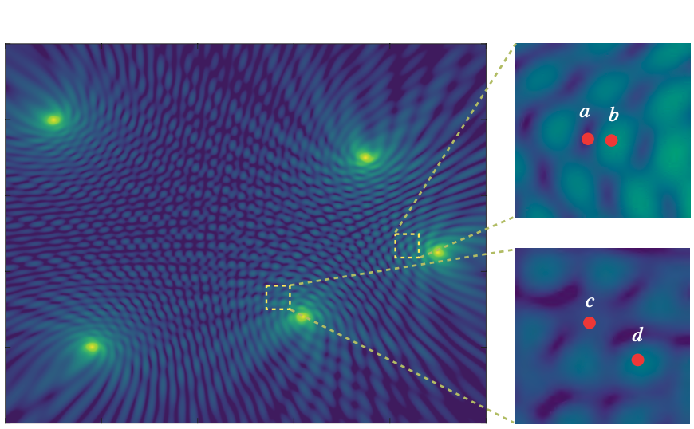
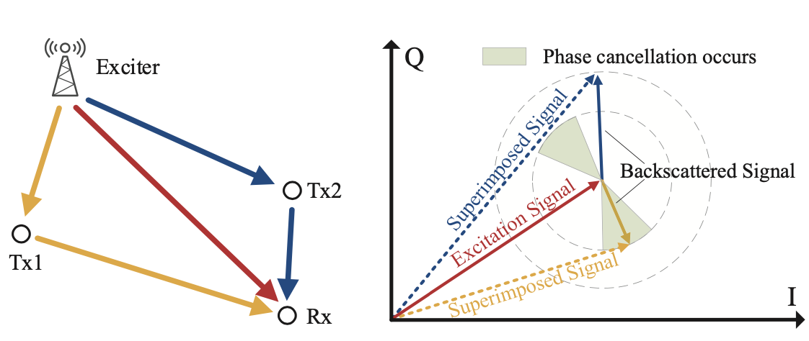
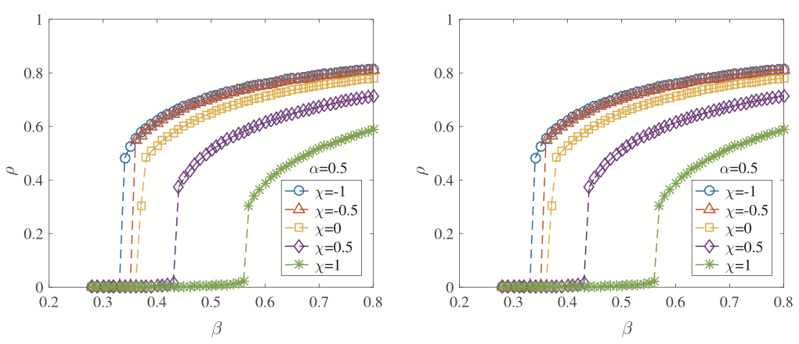
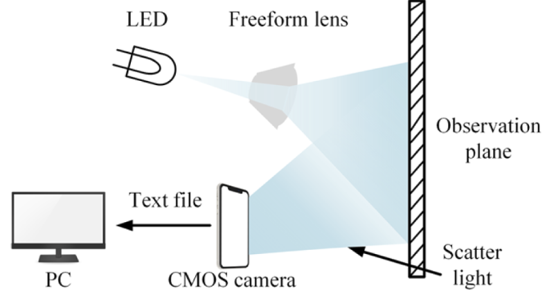
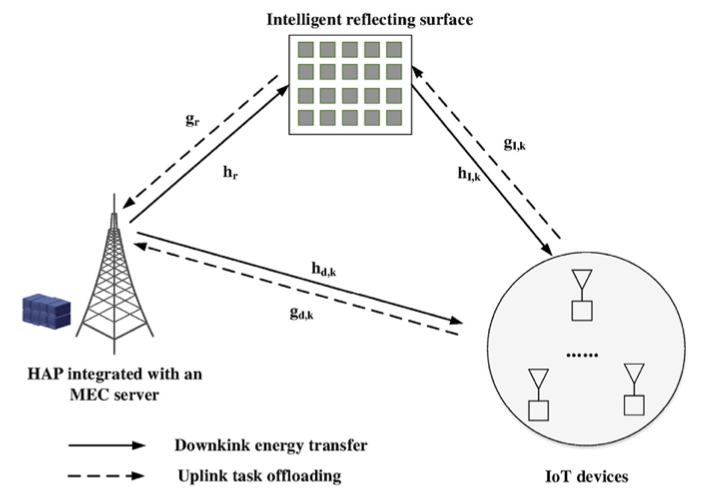
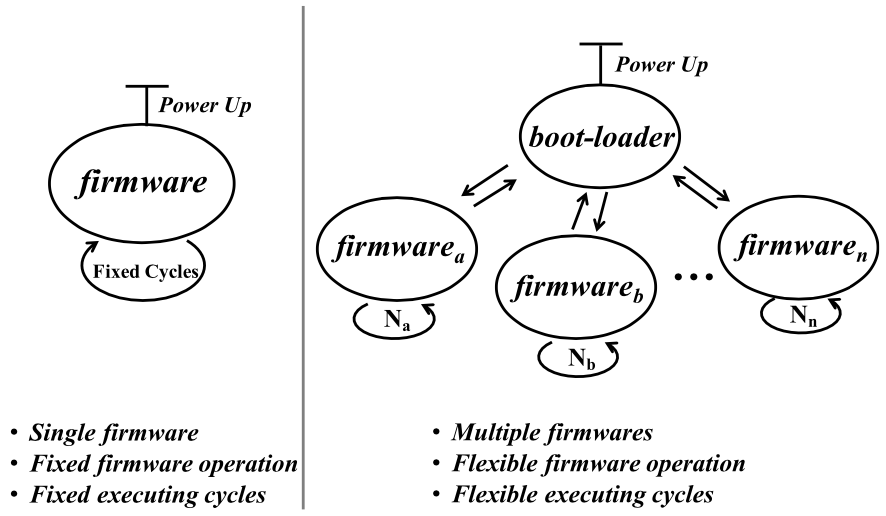

Biography
Dié Wu is currently an Associate Professor in College of Computer Science, Sichuan Normal University. Before serving as a faculty, he obtained his PhD degree in Computer Architecture and BEng degree in Information Security from University of Electronic Science and Technology of China in 2018 and 2011, respectively, where he was supervised by Prof. Li Lu and Prof. Fengli Zhang. During the period from 2016 to 2017, he was a visiting student at the School of Computer Science and Engineering in Nanyang Technological University, under the advisement of Prof. Mo Li. He is now leading the WireLess SensIng and NEtworking Systems (LINES) research group and maintains membership in CCF, IEEE, and ACM. His research interests focuses on the Internet of Things, particularly in wireless sensing and networking, backscatter communication, intermittent computing, energy harvesting, and ultra-low-power embedded systems.
Please visit my CN website here (ä¸æ–‡ç‰ˆä¸»é¡µ).
Recruitment: I'm looking for self-motivated postgraduate/undergraduate students with a background in computer science, electronic engineering, or communication. If interested, you are welcome to drop me an Email with your resume and transcripts.
Please visit my CN website here (ä¸æ–‡ç‰ˆä¸»é¡µ).
Recruitment: I'm looking for self-motivated postgraduate/undergraduate students with a background in computer science, electronic engineering, or communication. If interested, you are welcome to drop me an Email with your resume and transcripts.
News
- [Aug. 2024] Our paper CHAIN is accepted by TMC! Congrats to Xuejing. 🎉
- [Aug. 2024] Our paper CHESS is accepted by ICPADS 2024!
- [May. 2024] I will serve as the TPC member in GLOBECOM 2024.
- [Jan. 2024] Our paper about cocurrent charging is accepted by TON!
- [Dec. 2023] Our paper TIDE is accepted by INFOCOM 2024! Congrats to Yuzhuo. 🎉
- [Nov. 2023] Our paper about neglected back lobe for charging scheduling is accepted by TMC!
- [Aug. 2023] Our paper about rough set is accepted by PRICAI 2023! Congrats to Mengxiong. 🎉
- [Jul. 2023] Our paper WAIT is accepted by TOSN! Congrats to Youwei. 🎉
- [Jun. 2023] I will serve as the TPC member in ICNC 2024.
- [Dec. 2022] Our paper phase cancellation is accepted by WCNC 2023! Congrats to Wangqiang. 🎉
- [Dec. 2022] Our paper GAIN is accepted by INFOCOM 2023! Congrats to Yuzhuo. 🎉
- [Dec. 2022] Our paper BACK is accepted by INFOCOM 2023! Congrats to Meixuan. 🎉
- Show more
Selected Publications
( * refers to the students I have advised or co-advised, indicates the corresponding author)
-
 TONIEEE/ACM Transactions on Networking (TON), 2024.
-
 INFOCOM
IEEE Conference on Computer Communications (INFOCOM), 2024.
INFOCOM
IEEE Conference on Computer Communications (INFOCOM), 2024. -
 TMC
IEEE Transactions on Mobile Computing (TMC), 2024.
TMC
IEEE Transactions on Mobile Computing (TMC), 2024. -
 PRICAI
Pacific Rim International Conference on Artificial Intelligence (PRICAI), 2023.
PRICAI
Pacific Rim International Conference on Artificial Intelligence (PRICAI), 2023. -
 TOSN
ACM Transactions on Sensor Networks (TOSN), 2023.
TOSN
ACM Transactions on Sensor Networks (TOSN), 2023. -
 INFOCOM
IEEE Conference on Computer Communications (INFOCOM), 2023.
INFOCOM
IEEE Conference on Computer Communications (INFOCOM), 2023. -
 INFOCOM
IEEE Conference on Computer Communications (INFOCOM), 2023.
INFOCOM
IEEE Conference on Computer Communications (INFOCOM), 2023. -
 WCNCIEEE Wireless Communications and Networking Conference (WCNC), 2023.
-
 CHAOSChaos : An Interdisciplinary Journal of Nonlinear Science (CHAOS), 2022.
-
 ITAIC
IEEE Joint International Information Technology and Artificial Intelligence Conference (ITAIC), 2022.
ITAIC
IEEE Joint International Information Technology and Artificial Intelligence Conference (ITAIC), 2022. -
 MSN
IEEE International Conference on Mobility, Sensing and Networking (MSN), 2021.
MSN
IEEE International Conference on Mobility, Sensing and Networking (MSN), 2021. -
 OEOptics Express (OE), 2021.
-
 TVTIEEE Transactions on Vehicular Technology (TVT), 2021.
-
 TECS
ACM Transactions on Embedded Computing Systems (TECS), 2018.
TECS
ACM Transactions on Embedded Computing Systems (TECS), 2018. -
 IEEE Sens. J.IEEE Sensors Journal, 2017.
-
 RFID
IEEE International Conference on RFID(RFID), 2016.
RFID
IEEE International Conference on RFID(RFID), 2016. -
 RFID
IEEE International Conference on RFID(RFID), 2015.
RFID
IEEE International Conference on RFID(RFID), 2015.
Teaching
For Undergranduate Students
- Instructor, Network Programming, Semester-1, 2020, 2021, 2022, 2023
- Instructor, Advanced Network Technologies, Semester-2, 2020, 2021, 2022, 2023
- Instructor, Internet of Things, Semester-2, 2020, 2021, 2022, 2023
- Instructor, Introduction to Computer, Semester-1, 2018, 2019, 2021, 2022, 2023
- Instructor, Introduction to Engineering, Semester-2, 2020
- Instructor, Microcontroller, Semester-1, 2019
- Instructor, Wireless Sensor Networks, Semester-2, 2018, 2019
- Instructor, Network Programming, Semester-2, 2018, 2019
For Postgranduate Students
- Instructor, Wireless Communication, Semester-2, 2020, 2021, 2022, 2023
- Instructor, Wireless Sensing, Semester-2, 2020, 2021, 2022, 2023
Services
Program Committee
- International Conference on Computing, Networking and Communications, 2024
- International Conference on Cloud Computing, Big Data Application and Software Engineering, 2023
Journal & Conference Reviewers
- ACM Transactions on Embedded Computing Systems
- IEEE Transactions on Wireless Communication
- IEEE Sensors Journal
- IEEE Journal of RFID
- IET Communications
- IEEE RFID Conference
- IEEE Global Communications Conference
Contact
Address: No.1819, Sec.2, Chenglong Blvd, Chengdu, China
Office Location: Room 305, West Tower, No.1 Experimental Building
Email: wd@sicnu.edu.cn
Phone: (+86) 139-8174-8887
Last Update: